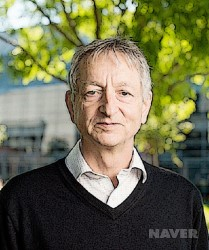
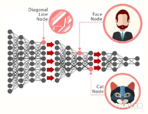
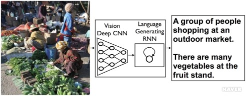

3 Page
Next

Artificial Intelligence
왜 기계학습(Machine Learning)이 최근에 주목을 받는가?

>>> 기계학습의 역사는 50년대 이후부터 시작되어 오래되었지만 80~90년대까지 발전 후 답보상태를 이루다가 2000년대 중반에 들어와서 현저한 발전이 이루어졌다. 기계학습의 하나의 기술인
인공 신경망 분야에서 두드러진 발전이 이루어졌는데 바로 딥러닝(Deep Learning)이 탄생한 것이다.
사물인터넷이 활성화되면 가장 두드러지는 현상은 엄청난 데이터가 발생하게 된다. 이 빅데이터를 이용하여 학습할 데이터들을 사전 처리하여 최적화함으로써 학습효과를
극대화하면 실용화가 가능한 기계학습 결과가 나오는 것이다.
기계학습의 르네상스를 오게 한 딥러닝

>>> 딥러닝은 인공신경망에 기반을 둔 기계학습 기술의 한 종류로 최근 몇 년간 비약적인 발전을 이루고 있다. 개념적으로 딥러닝의 인공신경망은 새로운 것이 아니다.
다층 구조로 설계하여 깊어진 인공신경망이 학습이 잘 이루어지지 않는 전통적인 문제를, 학습을 위한 데이터들을 비지도 학습을 통해 전처리하면 신경망이 깊어져도 학습이 잘된다는 것을 발견하였을 뿐이다.
인터넷에 의해 축적된 방대한 양의 데이터에서 오는 빅데이터와 이를 처리하기 위한 컴퓨팅 능력의 향상의 두 가지 요소가 없으면 이루어질 수 없는 발견이다.
기계학습에 세상은 어떻게 대응하고 있나

>>> 딥러닝을 통한 기계학습의 큰 성공은 많은 기업의 경쟁을 유발하고 있다. 2014년 초에 구글은 3년밖에 되지 않은 딥마인드(Deep Mind)라는 회사를 4억 달러가 넘는 금액으로 인수하였다.
가트너는 2014년 주목할 만한 기술분야 중 하나로 딥러닝을 꼽았다. 이미지 인식, 음성 인식, 번역 등의 분야에서 현저한 성과가 이루어지고 있다. 이미지 인식 분야는 단순하게 물체 종류를 알아맞히는 것을 넘어 이미지 전체를 설명하는
문장까지도 생성하는 수준에 도달했다.